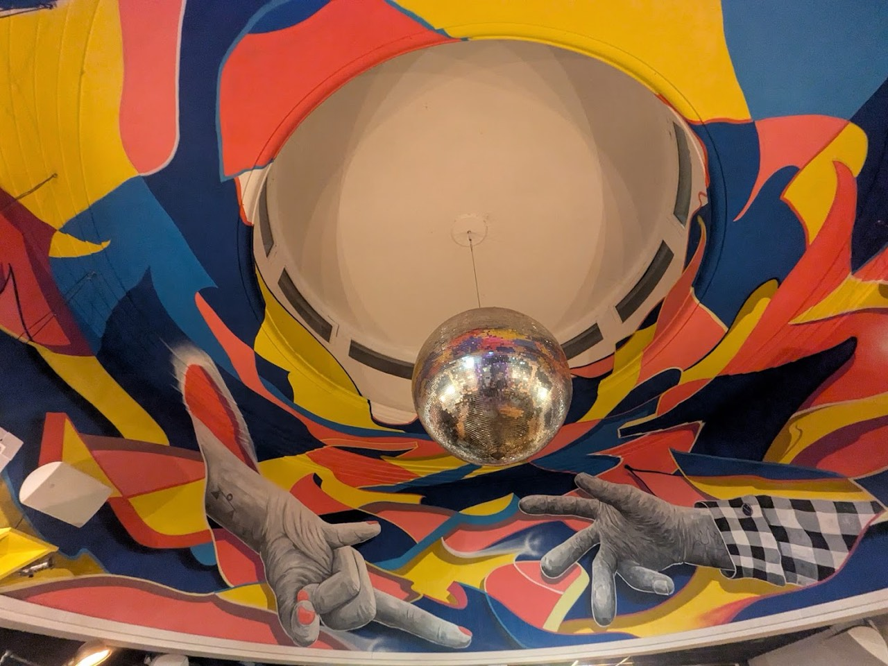
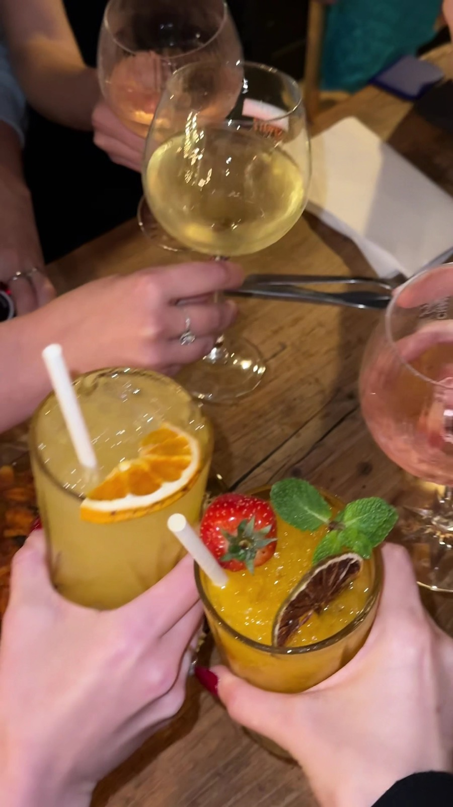
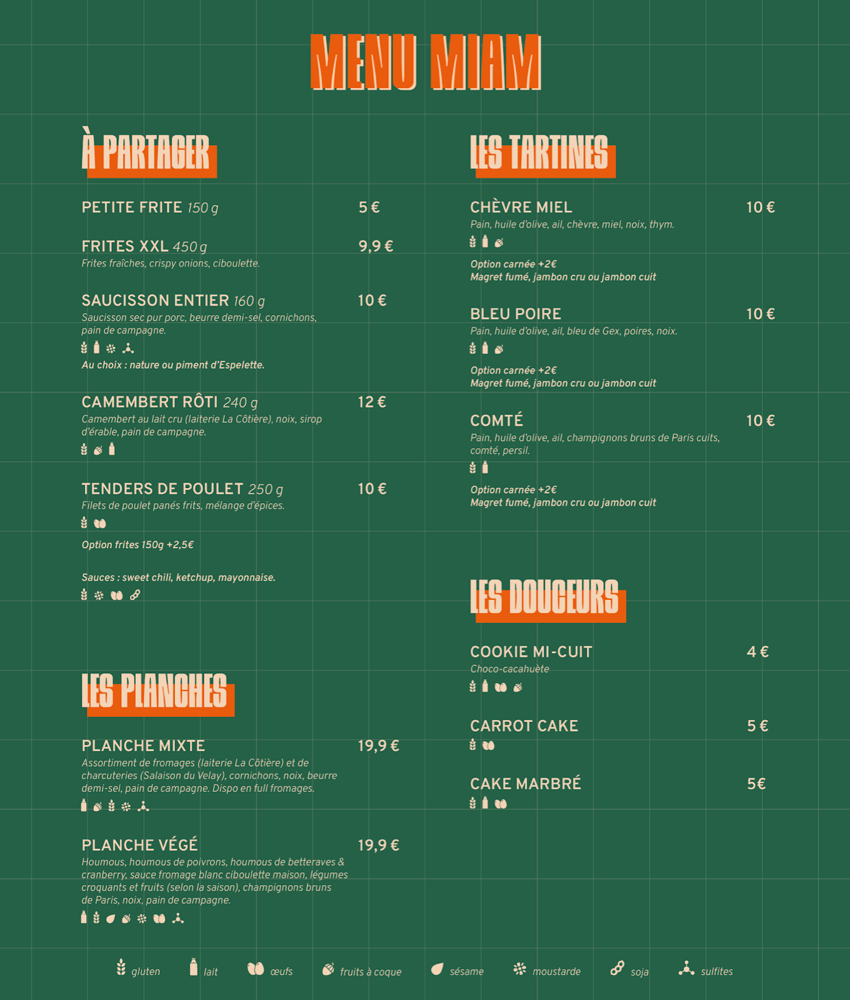
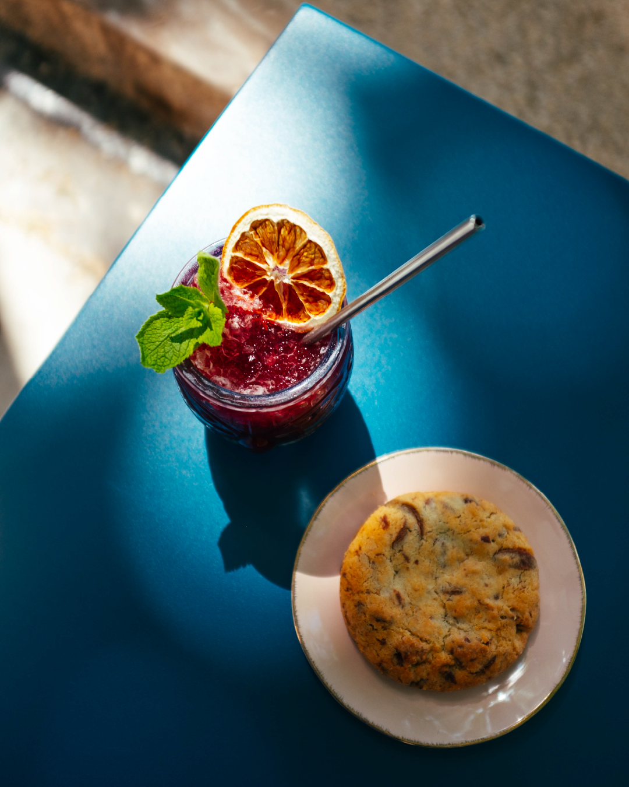
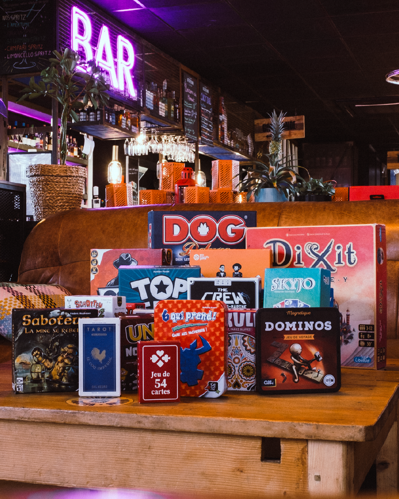
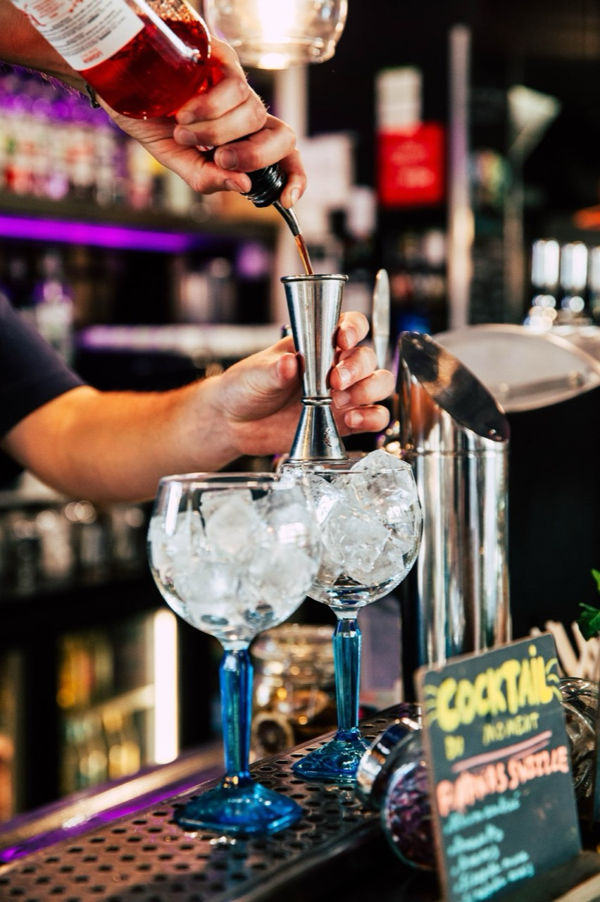
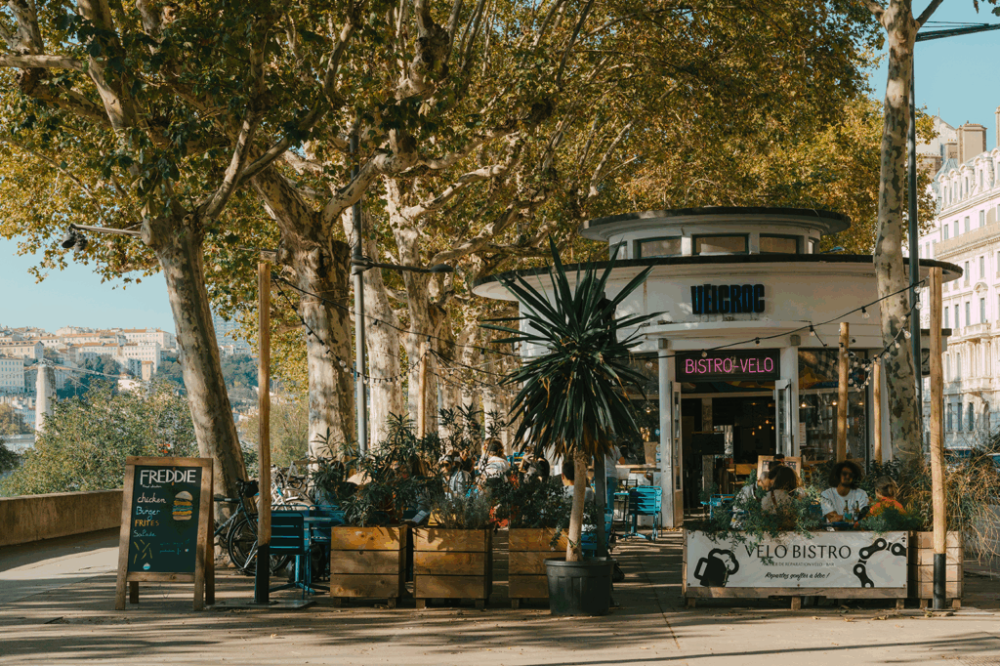

Bistro · Lyon 6e
Vélcroc
Vélcroc, bistro à Lyon 6e, vous accueille au Pont Lafayette, 2916, 18 Quai du Général Sarrail, 69006 Lyon.
- Sandwichs
- Terrasse
- 4,2 ★ sur Google (431 avis)

En images







Nous trouver
Pont Lafayette, 2916, 18 Quai du Général Sarrail, 69006 Lyon
| Lun-Mer | 12:00-24:00 |
| Jeu-Sam | 12:00-01:00 |
| Dim | 10:00-23:00 |